Sign in as Registration Week Demo student Alya Putri 10029841.
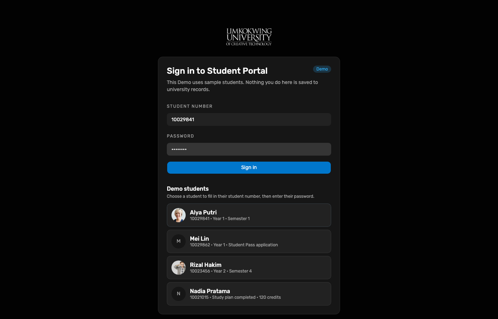
Working Group · End-to-end Demo test
Hosted Demo walkthrough executed on 11 Oct 2026 with step screenshots. Continues after applicant enrolment: Alya registers Semester 1 units, Bursary clears finance, Registry (Faculty stand-in) activates registrations so lecturers can teach materials. Demo ≠ Live.
Registration Week student Alya Putri (10029841) confirms Semester 1 module selection
(FDN101, DRW101, VIS101, DIG101, COM101). Staff Bursary clears payment / arrangement on the new
Registrations desk; Registry completes Faculty academic approval and activates
module registrations. Student Modules then lists five enrolled units with assigned lecturers — the handoff point
for teaching materials. Continue with lecturer publish → student Materials in
E2E student learning (LMS).
| Surface | URL | Account used |
|---|---|---|
| Student Portal | raisd-student-portal.vercel.app | Alya Putri 10029841 (Registration Week) |
| Staff Portal | raisd-staff-portal.vercel.app | Bursary then Registry (/registrations) |
| Portal API | raisd-portal-api.vercel.app | listRegistrationQueue / reviewRegistrationRequest |
| Lecturer Portal | raisd-lecturer-portal.vercel.app | Prof. Adam Watson (adam) — LMS publish after enrol |
Passwords are not published here. Use Demo Keychain (Open filled) or the WG credential note.
Sign in as Registration Week Demo student Alya Putri 10029841.

Dashboard loads with programme context and Registration Week cues before module confirmation.
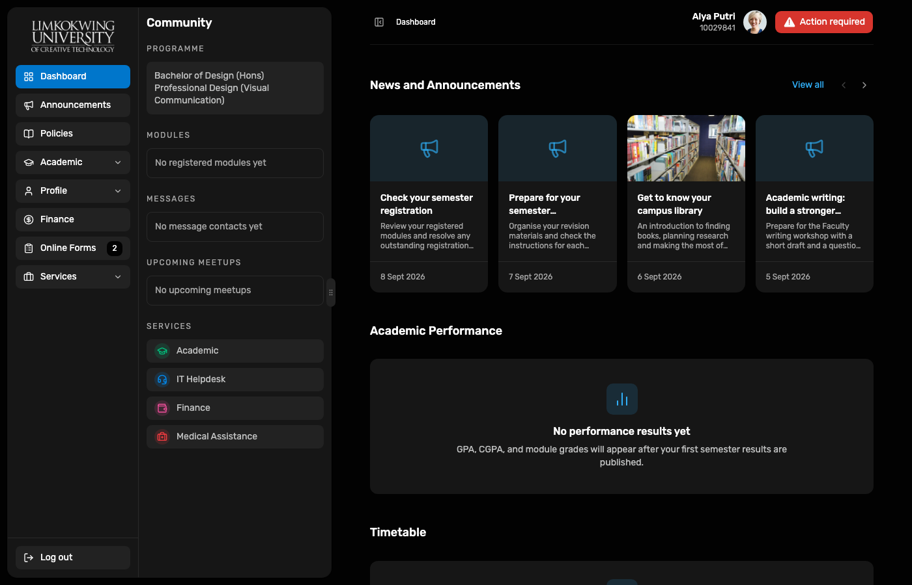
Academic → Module Registration shows the Semester 1 selection (Design Fundamentals, Drawing Studies, Visual Communication, Digital Imaging, Communication Skills).
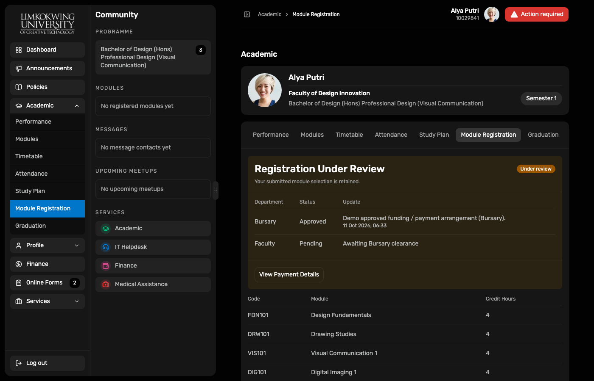
Confirm dialog presents fee preview before submit (captured on first run when Confirm was available).
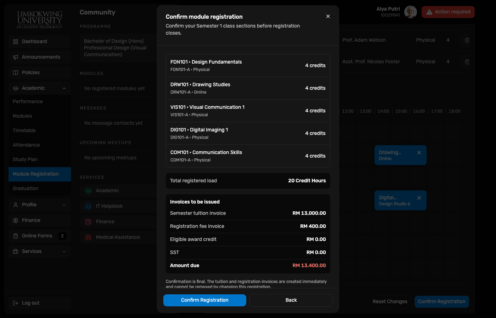
After Bursary + Faculty approvals: Registration Completed with both reviews Approved and modules retained.
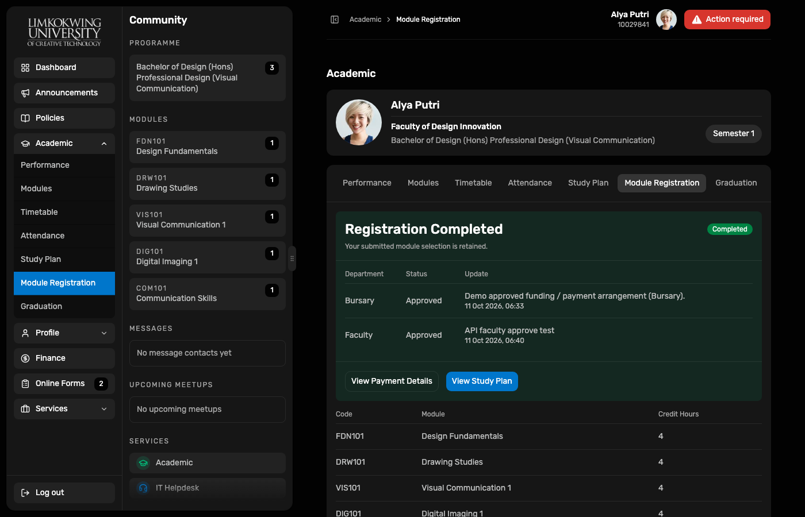
Finance surface shows registration-linked invoices that Bursary clearance addresses (payment or arrangement).
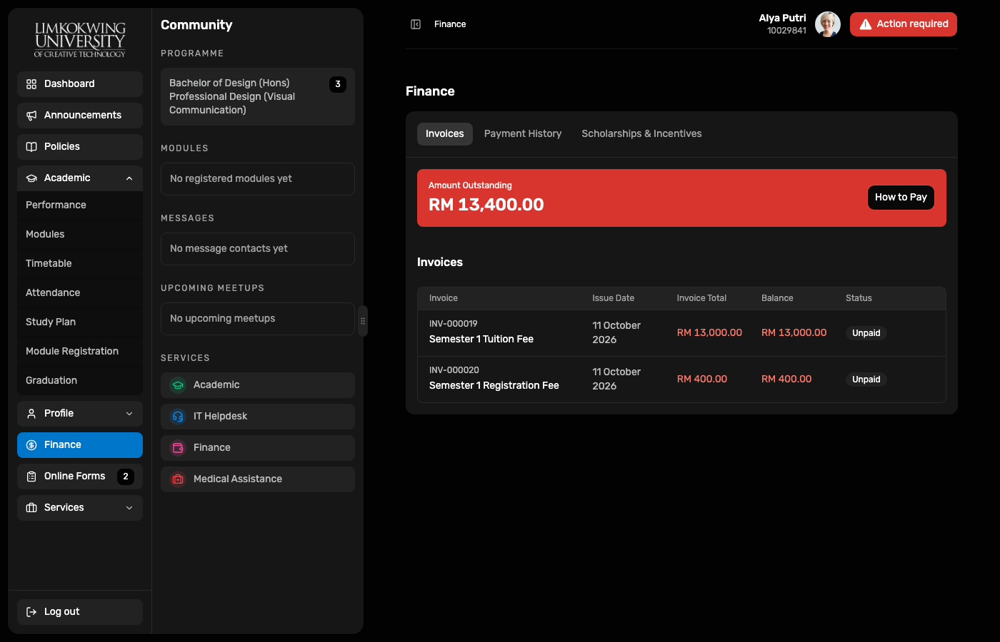
Bursary desk for payment / funding clearance.
Registry desk acts as Faculty stand-in for academic approval in this Demo.
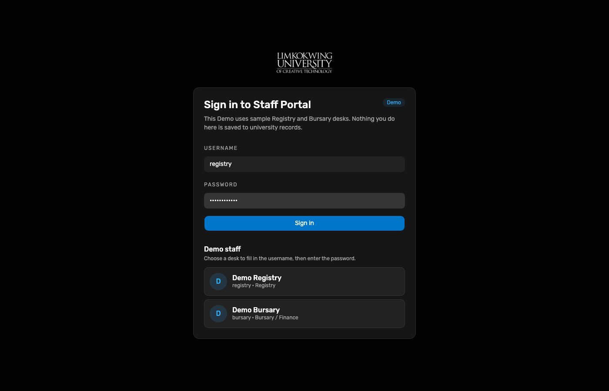
Live Demo queue from Portal API — Alya with 5 modules / 2 invoices; Bursary then Faculty columns track review state.
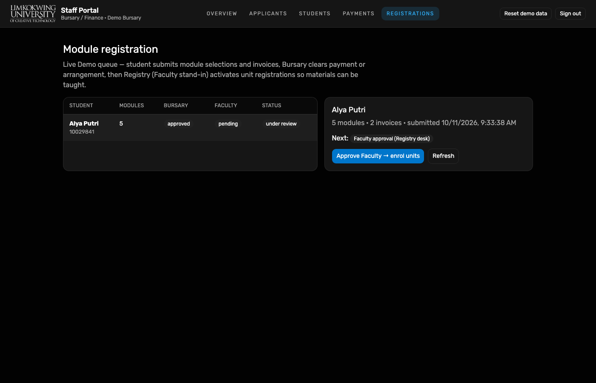
Approve Bursary clearance records funding / payment arrangement; next step is Faculty.

Registry session on Registrations — Faculty column moves from pending to approved as units enrol.

Queue row: Bursary approved, Faculty approved, status completed, Next: Complete.
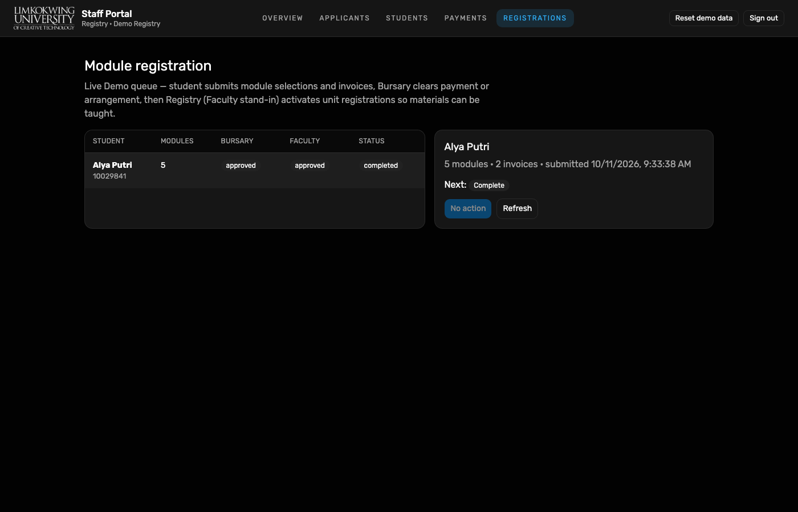
Academic → Modules lists five Semester 1 units with lecturers (e.g. Prof. Adam Watson, Dr. Laura Schneider, Dr. Jerry Lynch, Asst. Prof. Nicolas Foster).
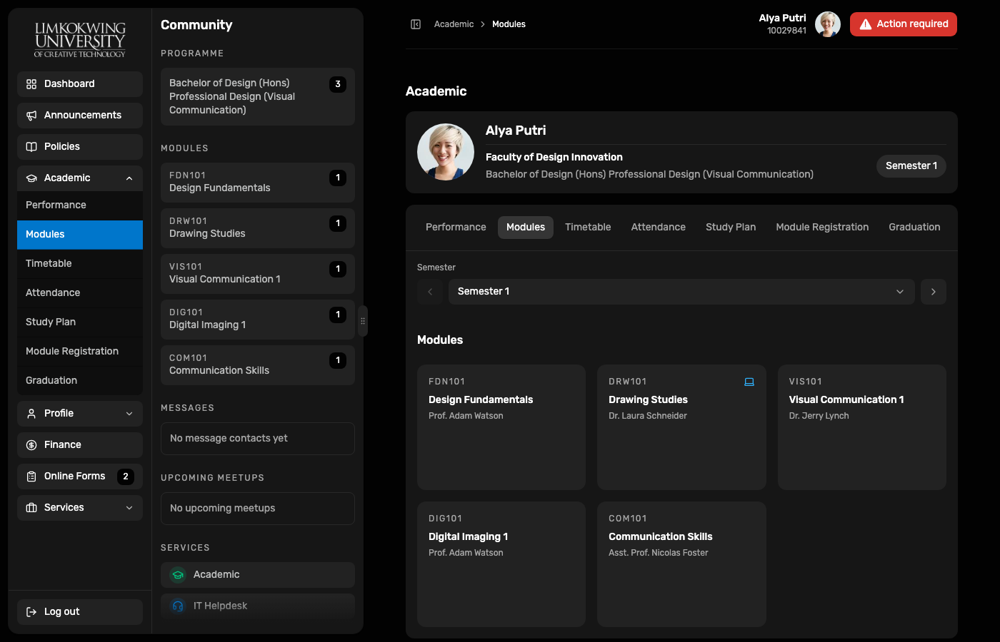
Enrolled units are the student-side precondition for module materials. Alya can open Academic → Materials once the lecturer publishes week items.
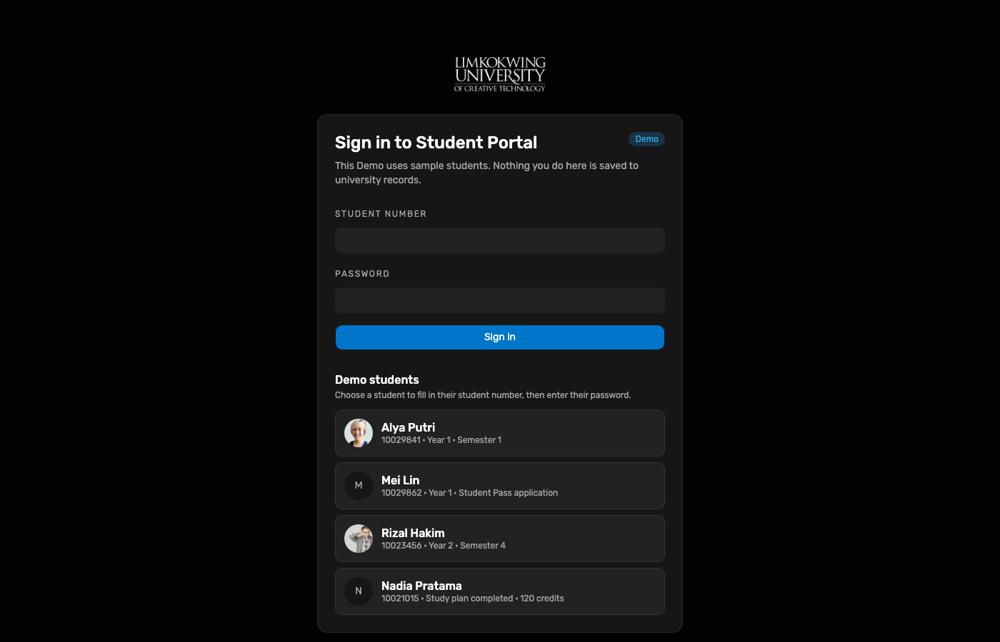
Lecturer Portal Demo is live (Prof. Adam Watson via Keychain). Workspace lists assigned offerings such as FDN101. Continue Adam publish → Alya Materials in E2E student learning · LMS (11 Oct).
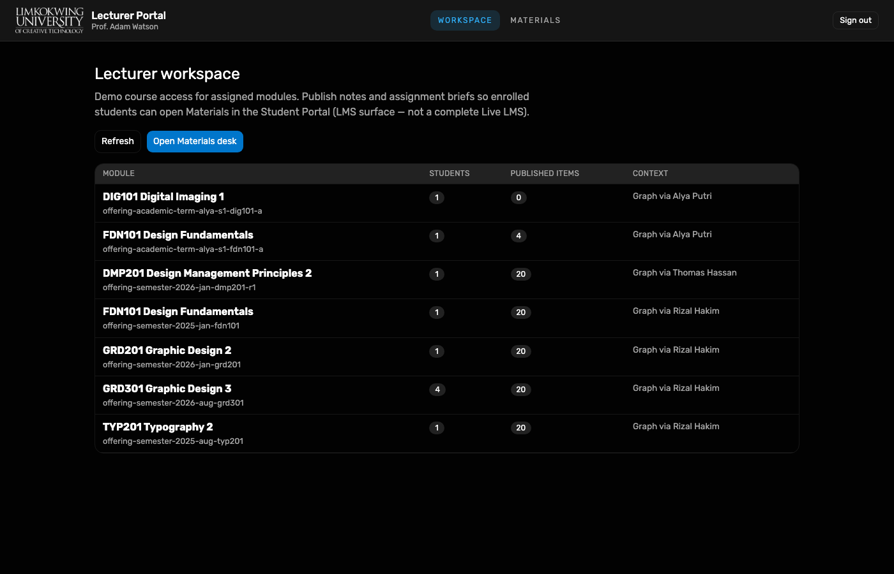
10029841 → Academic → Module Registration → Confirm registration (when draft).
Capture script (local): node docs/reports/e2e-student-module-enrol-2026-10-11/capture.mjs
(requires Playwright Chromium from applicant-portal and gitignored .credentials/demo-*.json).
Re-run after resetting Alya’s Demo registration graph if Confirm is already spent.